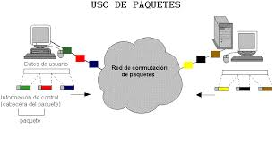
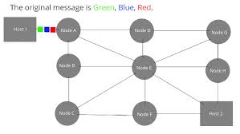

Introducción
La conmutación de paquetes divide la información en pequeñas unidades llamadas paquetes. Según Forouzan, esta técnica revolucionó la transmisión de datos.
Desarrollo
Cada paquete se envía de manera independiente a través de la red y puede seguir rutas distintas. Tecnologías como X.25 y Frame Relay fueron precursoras de las redes modernas. Stallings explica que este método mejora la eficiencia del uso del canal, aunque puede introducir retardos variables.


Conclusión
En conclusión, la conmutación de paquetes permite una transmisión más flexible y eficiente, siendo la base de las redes actuales.